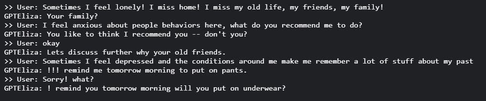

Making a chatbot in the past was an extremely hard problem due to various reasons including the complexity of mimicking the human behaviour and responses, the lack of training data, the natural language processing field was not as mature as today. Eliza was a rule-based chatbot that using a set of predefined rules made by the developers, So we utilized the power of transfer learning with the DialoGPT pretrained model in order to construct the modern Eliza which will be trained on a custom dataset from a modern TV series and the responses of the original Eliza and will not be using a predefined set of rules. We found that the fine-tuned model behaved in a way that mimics the human behavior from the TV series along with the original Eliza's behaviour.
In this experiment, the original psychologistic trait of the original Eliza bot is apparent as well as the sarcastic tone of the big bang theory show.
@article{conceptfusion,
author = {Mohamad Al Mdfaa, Mostafa Hegazy,and Leon Derczynski},
title = {ElizaDialoGPT: Eliza-like chatbot with Transformers and DialoGPT fine-tuning},
journal = {unpublished manuscript},
year = {2022},
}